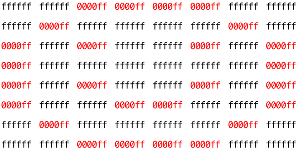

Filter (less)
Problema a Resolver
Implemente um programa que aplica filtros a arquivos BMP, conforme descrito abaixo.
$ ./filter -r IMAGE.bmp REFLECTED.bmp
onde IMAGE.bmp é o nome de um arquivo de imagem e REFLECTED.bmp é o nome dado a um arquivo de imagem de saída, agora refletido.
Começando
Passo a Passo
Eis aqui um passo a passo para a resolução do problema.
Observe que há 5 vídeos na playlist.
Contexto
Bitmaps
Talvez a forma mais simples de representar uma imagem seja com uma grade de pixels (ou seja, pontos), cada um dos quais pode ser de uma cor diferente. Para imagens em preto e branco, precisamos de 1 bit por pixel, pois 0 pode representar preto e 1 pode representar branco, como no exemplo abaixo.

Nesse sentido, então, uma imagem é apenas um mapa de bits (ou seja, um mapa de zeros e uns). Para imagens mais coloridas, você simplesmente precisa de mais bits por pixel. Um formato de arquivo (como BMP, JPEG ou PNG) que suporta "cores de 24 bits" usa 24 bits por pixel. (O BMP na verdade suporta cores de 1, 4, 8, 16, 24 e 32 bits).
Um BMP de 24 bits usa 8 bits para indicar a quantidade de vermelho na cor de um pixel, 8 bits para indicar a quantidade de verde na cor de um pixel e 8 bits para indicar a quantidade de azul na cor de um pixel. Se você já ouviu falar de cor RGB, bem, agora você sabe: vermelho, verde, azul.
Se os valores R, G e B de algum pixel em um BMP forem, digamos, 0xff, 0x00 e 0x00 em hexadecimal, esse pixel é puramente vermelho, já que 0xff (também conhecido como 255 em decimal) implica "muito vermelho", enquanto 0x00 e 0x00 implicam "nenhum verde" e "nenhum azul", respectivamente.
Um Bit(map) Um Pouco Mais Técnico
Lembre-se de que um arquivo é apenas uma sequência de bits, organizados de alguma forma. Um arquivo BMP de 24 bits, então, é essencialmente apenas uma sequência de bits, dos quais quase todos os 24 representam a cor de um pixel. No entanto, um arquivo BMP também contém alguns "metadados", informações como a altura e largura de uma imagem. Esses metadados são armazenados no início do arquivo na forma de duas estruturas de dados geralmente referidas como "cabeçalhos", para não serem confundidas com os arquivos de cabeçalho em C. (Por sinal, esses cabeçalhos evoluíram ao longo do tempo. Este problema usa a versão mais recente do formato BMP da Microsoft, 4.0, que estreou com o Windows 95.)
O primeiro desses cabeçalhos, chamado de BITMAPFILEHEADER, tem 14 bytes de comprimento. (Lembre-se de que 1 byte equivale a 8 bits.) O segundo desses cabeçalhos, chamado de BITMAPINFOHEADER, tem 40 bytes de comprimento. Logo após esses cabeçalhos está o bitmap real: uma matriz de bytes, em que triplas representam a cor de um pixel. No entanto, o BMP armazena essas triplas de trás para frente (ou seja, como BGR), com 8 bits para azul, seguidos por 8 bits para verde e, em seguida, 8 bits para vermelho. (Alguns BMPs também armazenam o bitmap inteiro de trás para frente, com a linha superior da imagem no final do arquivo BMP. Mas armazenamos os BMPs deste conjunto de problemas como descrito aqui, com a linha superior de cada bitmap primeiro e a inferior por último.) Em outras palavras, se convertermos o smiley de 1 bit acima para um smiley de 24 bits, substituindo o preto por vermelho, um BMP de 24 bits armazenaria esse bitmap da seguinte forma, em que 0000ff significa vermelho e ffffff significa branco; destacamos em vermelho todas as ocorrências de 0000ff.

Porque nós apresentamos estes bits da esquerda para a direita, de cima para baixo, em 8 colunas, você pode realmente ver o sorriso vermelho se der um passo para trás.
Para ser claro, lembre-se que um dígito hexadecimal representa 4 bits. Consequentemente, ffffff em hexadecimal realmente significa 111111111111111111111111 em binário.
Observe que você poderia representar uma imagem bitmap como uma matriz 2D de pixels: onde a imagem é uma matriz de linhas, cada linha é uma matriz de pixels. De fato, é assim que escolhemos representar imagens bitmap neste problema.
Filtragem de Imagem
O que significa filtrar uma imagem? Você pode pensar em filtrar uma imagem como pegar os pixels de alguma imagem original e modificar cada pixel de tal forma que um efeito particular seja aparente na imagem resultante.
Escala de Cinza
Um filtro comum é o filtro "escala de cinza", onde pegamos uma imagem e queremos convertê-la para preto e branco. Como isso funciona?
Lembre-se de que se os valores de vermelho, verde e azul forem todos definidos como 0x00 (hexadecimal para 0), o pixel será preto. E se todos os valores forem definidos como 0xff (hexadecimal para 255), o pixel será branco. Desde que os valores de vermelho, verde e azul sejam iguais, o resultado será tons de cinza ao longo do espectro preto-branco, com valores mais altos significando tons mais claros (mais próximos do branco) e valores mais baixos significando tons mais escuros (mais próximos do preto).
Portanto, para converter um pixel para escala de cinza, precisamos garantir que os valores de vermelho, verde e azul sejam todos iguais. Mas como sabemos que valor usar? Bem, é provável que, se os valores originais de vermelho, verde e azul forem todos bastante altos, o novo valor também deva ser bastante alto. E se os valores originais forem todos baixos, o novo valor também deve ser baixo.
De fato, para garantir que cada pixel da nova imagem ainda tenha o mesmo brilho geral ou escuridão da imagem antiga, podemos tirar a média dos valores de vermelho, verde e azul para determinar qual tom de cinza fazer o novo pixel.
Se você aplicar isso a cada pixel da imagem, o resultado será uma imagem convertida em escala de cinza.
Sépia
A maioria dos programas de edição de imagens suporta um filtro "sépia", que dá às imagens uma sensação antiga tornando toda a imagem um pouco avermelhada-marrom.
Uma imagem pode ser convertida em sépia pegando cada pixel e calculando novos valores de vermelho, verde e azul com base nos valores originais dos três.
Há vários algoritmos para converter uma imagem em sépia, mas para este problema, pediremos que você use o seguinte algoritmo. Para cada pixel, os valores de cor sépia devem ser calculados com base nos valores de cor originais conforme abaixo.
sepiaRed = .393 * originalRed + .769 * originalGreen + .189 * originalBlue
sepiaGreen = .349 * originalRed + .686 * originalGreen + .168 * originalBlue
sepiaBlue = .272 * originalRed + .534 * originalGreen + .131 * originalBlue
É possível que o resultado de cada uma dessas fórmulas não seja um número inteiro, mas cada valor pode ser arredondado para o número inteiro mais próximo. Também é possível que o resultado da fórmula seja um número maior que 255, o valor máximo para um valor de cor de 8 bits. Nesse caso, os valores de vermelho, verde e azul devem ser limitados a 255. Como resultado, podemos garantir que os valores de vermelho, verde e azul resultantes serão números inteiros entre 0 e 255, inclusive.
Reflexão
Alguns filtros também podem mover pixels ao redor. Refletir uma imagem, por exemplo, é um filtro onde a imagem resultante é o que você obteria ao colocar a imagem original na frente de um espelho. Então, quaisquer pixels no lado esquerdo da imagem devem acabar no lado direito, e vice-versa.
Observe que todos os pixels originais da imagem original ainda estarão presentes na imagem refletida, apenas que esses pixels podem ter se rearranjado para estar em um lugar diferente na imagem.
Desfoque
Há várias maneiras de criar o efeito de desfoque ou suavização em uma imagem. Para este problema, usaremos o "desfoque de caixa", que funciona pegando cada pixel e, para cada valor de cor, atribuindo um novo valor pela média dos valores de cor dos pixels vizinhos.
Considere a seguinte grade de pixels, onde numeramos cada pixel.

O novo valor de cada pixel seria a média dos valores de todos os pixels que estão dentro de 1 linha e coluna do pixel original (formando uma caixa 3x3). Por exemplo, cada um dos valores de cor para o pixel 6 seria obtido pela média dos valores de cor originais dos pixels 1, 2, 3, 5, 6, 7, 9, 10 e 11 (note que o pixel 6 em si está incluído na média). Da mesma forma, os valores de cor para o pixel 11 seriam obtidos pela média dos valores de cor dos pixels 6, 7, 8, 10, 11, 12, 14, 15 e 16.
Para um pixel ao longo da borda ou do canto, como o pixel 15, ainda procuraríamos todos os pixels dentro de 1 linha e coluna: neste caso, os pixels 10, 11, 12, 14, 15 e 16.
Começando
Acesse o cs50.dev, clique na sua janela do terminal e execute cd sozinho. Você deve encontrar que o prompt da sua janela do terminal se assemelha ao abaixo:
$Em seguida, execute
wget https://cdn.cs50.net/2023/fall/psets/4/filter-less.zipPara baixar um arquivo ZIP chamado filter-less.zip em seu codespace.
Em seguida, execute
unzip filter-less.zippara criar uma pasta chamada filter-less. Você não precisa mais do arquivo ZIP, então pode executar
rm filter-less.zipe responda com "y" seguido de Enter no prompt para remover o arquivo ZIP que você baixou.
Agora digite
cd filter-lessseguido de Enter para mover-se para (ou seja, abrir) esse diretório. Seu prompt agora deve se parecer com o abaixo.
filter-less/ $Execute ls sozinho e você deverá ver alguns arquivos: bmp.h, filter.c, helpers.h, helpers.c e Makefile. Você também deve ver uma pasta chamada images com quatro arquivos BMP. Se você tiver algum problema, siga esses mesmos passos novamente e veja se consegue determinar onde errou!
Entendendo
Vamos dar uma olhada em alguns dos arquivos fornecidos como código de distribuição para entender o que está dentro deles.
bmp.h
Abra o arquivo bmp.h (duplo clique no navegador de arquivos) e dê uma olhada.
Você verá definições dos cabeçalhos que mencionamos (BITMAPINFOHEADER e BITMAPFILEHEADER). Além disso, esse arquivo define BYTE, DWORD, LONG e WORD, tipos de dados normalmente encontrados no mundo da programação do Windows. Observe como eles são apenas aliases para primitivas com as quais você já está (esperançosamente) familiarizado. Parece que BITMAPFILEHEADER e BITMAPINFOHEADER usam esses tipos.
Talvez o mais importante para você, este arquivo também define uma struct chamada RGBTRIPLE que, simplesmente, "encapsula" três bytes: um azul, um verde e um vermelho (a ordem, lembre-se, em que esperamos encontrar triplas RGB no disco).
Por que essas structs são úteis? Bem, lembre-se de que um arquivo é apenas uma sequência de bytes (ou, em última análise, bits) no disco. Mas esses bytes geralmente são ordenados de tal forma que os primeiros representam algo, os próximos representam outra coisa e assim por diante. "Formatos de arquivo" existem porque o mundo padronizou o que os bytes significam. Agora, poderíamos simplesmente ler um arquivo do disco para a RAM como um grande array de bytes. E poderíamos simplesmente lembrar que o byte em array[i] representa uma coisa, enquanto o byte em array[j] representa outra. Mas por que não dar nomes a alguns desses bytes para que possamos recuperá-los da memória com mais facilidade? É precisamente isso que as structs em bmp.h nos permitem fazer. Em vez de pensar em algum arquivo como uma longa sequência de bytes, podemos pensar nele como uma sequência de structs.
filter.c
Agora, vamos abrir filter.c. Este arquivo já foi escrito para você, mas há alguns pontos importantes que valem a pena serem observados aqui.
Em primeiro lugar, observe a definição de filters na linha 10. Essa string informa ao programa quais são os argumentos de linha de comando permitidos para o programa: b, g, r e s. Cada um deles especifica um filtro diferente que podemos aplicar às nossas imagens: desfoque, escala de cinza, reflexão e sépia.
As próximas linhas abrem um arquivo de imagem, verificam se ele é de fato um arquivo BMP e leem todas as informações de pixel em uma matriz 2D chamada imagem.
Role até a instrução switch que começa na linha 101. Note que, dependendo da opção de filtro escolhida, uma função diferente é chamada: se o usuário escolhe o filtro b, o programa chama a função blur; se g, então grayscale é chamada; se r, então reflect é chamada; e se s, então sepia é chamada. Observe também que cada uma dessas funções recebe como argumentos a altura da imagem, a largura da imagem e a matriz 2D de pixels.
Essas são as funções que você irá implementar (em breve!). Como você pode imaginar, o objetivo é que cada uma dessas funções edite a matriz 2D de pixels de tal forma que o filtro desejado seja aplicado à imagem.
As linhas restantes do programa pegam a imagem resultante e a escrevem em um novo arquivo de imagem.
helpers.h
Em seguida, dê uma olhada em helpers.h. Este arquivo é bastante curto e fornece apenas os protótipos de função para as funções que você viu anteriormente.
Aqui, observe o fato de que cada função recebe um array 2D chamado image como argumento, onde image é um array de height linhas, e cada linha é ela mesma outro array de width muitos RGBTRIPLEs. Então, se image representa toda a imagem, então image[0] representa a primeira linha, e image[0][0] representa o pixel no canto superior esquerdo da imagem.
helpers.c
Agora, abra helpers.c. Aqui é onde a implementação das funções declaradas em helpers.h pertence. Mas observe que, por enquanto, as implementações estão faltando! Esta parte é com você.
Makefile
Finalmente, vamos dar uma olhada no Makefile. Este arquivo especifica o que deve acontecer quando executamos um comando de terminal como make filter. Enquanto os programas que você pode ter escrito antes eram limitados a apenas um arquivo, filter parece usar vários arquivos: filter.c e helpers.c. Então, precisaremos dizer ao make como compilar este arquivo.
Tente compilar o filter por si mesmo indo para o seu terminal e executando
$ make filter
Em seguida, você pode executar o programa rodando:
$ ./filter -g images/yard.bmp out.bmp
que pega a imagem em images/yard.bmp, e gera uma nova imagem chamada out.bmp depois de executar os pixels pela função grayscale. No entanto, grayscale ainda não faz nada, então a imagem de saída deve parecer igual à imagem original do quintal.
Especificação
Implemente as funções em helpers.c de forma que um usuário possa aplicar filtros de escala de cinza, sépia, reflexão ou desfoque em suas imagens.
- A função
grayscaledeve pegar uma imagem e transformá-la em uma versão preto e branco da mesma imagem. - A função
sepiadeve pegar uma imagem e transformá-la em uma versão sépia da mesma imagem. - A função
reflectdeve pegar uma imagem e refleti-la horizontalmente. - Por fim, a função
blurdeve pegar uma imagem e transformá-la em uma versão borrada por caixa da mesma imagem.
Você não deve modificar nenhuma das assinaturas de função, nem deve modificar nenhum outro arquivo além de helpers.c.
Uso
Seu programa deve se comportar conforme o exemplo abaixo:
$ ./filter -g INFILE.bmp OUTFILE.bmp
$ ./filter -s INFILE.bmp OUTFILE.bmp
$ ./filter -r INFILE.bmp OUTFILE.bmp
$ ./filter -b INFILE.bmp OUTFILE.bmp
Dicas
- Os valores dos componentes
rgbtRed,rgbtGreenergbtBluede um pixel são todos inteiros, portanto, certifique-se de arredondar quaisquer números de ponto flutuante para o inteiro mais próximo ao atribuí-los a um valor de pixel! - Ao implementar a função
grayscale, você precisará calcular a média dos valores de 3 inteiros. Por que você poderia querer dividir a soma desses inteiros por 3,0 e não por 3? - Na função
reflect, você precisará trocar os valores dos pixels em lados opostos de uma linha. Lembre-se da aula de como implementamos a troca de dois valores com uma variável temporária. Não há necessidade de usar uma função separada para troca, a menos que você queira! - Como uma função que retorna o menor de dois inteiros pode ser útil ao implementar
sepia, especialmente quando você precisa garantir que o valor da cor não seja superior a 255? - Ao implementar a função
blur, pode ser que o desfoque de um pixel acabe afetando o desfoque de outro pixel. Talvez criar uma cópia deimage(o terceiro argumento da função) declarando um novo array (bidimensional) com um código comoRGBTRIPLE copy[height][width];e copiarimageemcopy, pixel a pixel, com loops aninhados defor? E então ler as cores dos pixels decopy, mas escrever (ou seja, alterar) as cores dos pixels emimage?
Testando
Certifique-se de testar todos os seus filtros nos arquivos de bitmap de amostra fornecidos!
Execute o abaixo para avaliar a correção do seu código usando check50. Mas certifique-se de compilar e testar também!
check50 cs50/problems/2024/x/filter/lessExecute o código abaixo para avaliar o estilo do seu código usando style50.
style50 helpers.cComo Submeter
No seu terminal, execute o comando abaixo para submeter o seu trabalho.
submit50 cs50/problems/2024/x/filter/less